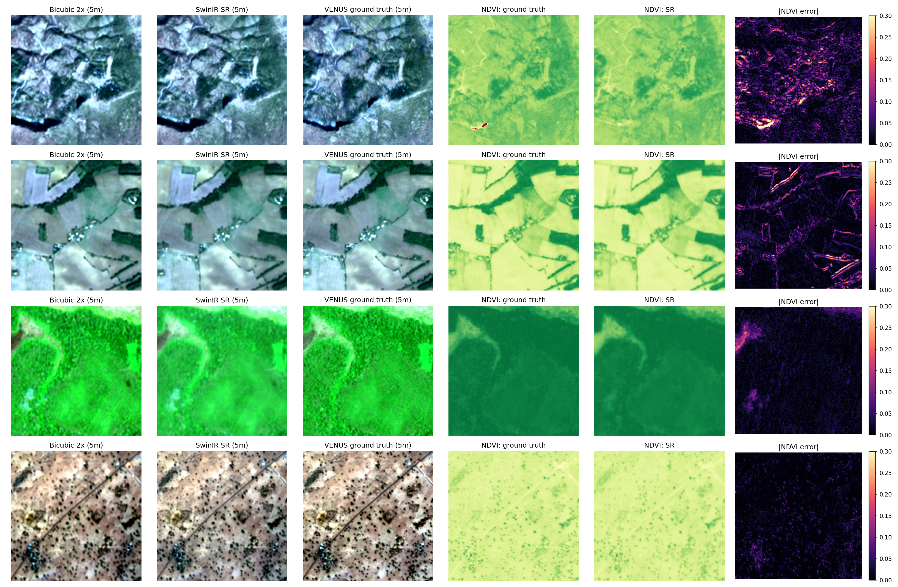
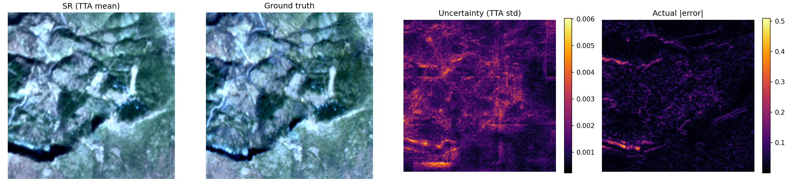

Sentinel-2 at 10 m, resolved to 2.5 m, with the doubt left visible.
Tessera sharpens medium-resolution imagery for field boundaries, narrow roads and small buildings. Each output ships with a georeference check and an uncertainty map, because some of the detail is inferred rather than observed.
Method
-
Learn from real pairs1,000 Sentinel-2 and VENUS tile pairs from SEN2VENUS, four bands (blue, green, red, near-infrared), split 70/15/15 by image so the test tiles are never seen in training.
-
Train a 2× SwinIRTransformer-based, L1 loss, 60 epochs. Each band is scaled by its own 99.5th percentile so near-infrared does not saturate.
-
Run it twiceTiled inference with border trimming removes seam artifacts. The 2× model is applied twice: 10 m to 5 m to 2.5 m.
-
Keep it a mapOutput is a float32 GeoTIFF in original units. CRS, pixel size, origin and footprint are checked against the input. On a test tile (EPSG:32631) the pixel size went from 10 m to 2.5 m with the origin unchanged.
-
Show the doubtFour flipped copies of the input are run through the model. Where they disagree, the uncertainty map is bright.
-
Pack it to travelWeights, band scales and settings are saved as one 11.7 MB model bundle, so the service starts without the training data.
Results
Measured at 5 m on held-out test tiles against real VENUS imagery, mean ± standard deviation across tiles.
Loading results…

figures/qualitative_test.png not found. Copy it from your Drive figures folder.
figures/uncertainty.png not found. Copy it from your Drive figures folder.